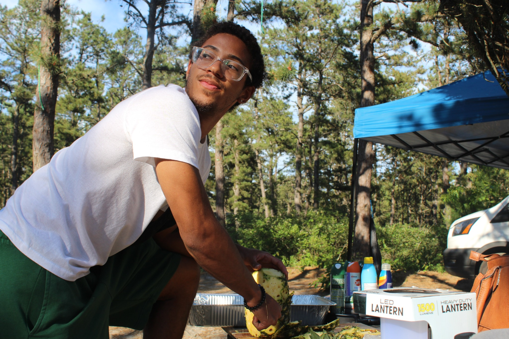

01 / Mechanical design
Sooper Scooper 5000
Designed and fabricated a compact Turf Wars robot around a rotating scoop for intake, storage, and scoring.
SolidWorks · fabrication · testing
Read the reportHarvard University · Mechanical Engineering
I build things, test them, and try to understand why they work. I’m a mechanical engineering student, sprinter, musician, and hands-on problem solver.

I’m studying mechanical engineering at Harvard and looking for the point where an idea becomes a real, working object. I like projects that involve design decisions, physical testing, and a little persistence.
Outside of class, I run for Harvard Track & Field, play double bass, and spend time mentoring and working with younger students.


Short version first. Open the attached reports when you want the details.
01 / Mechanical design
Designed and fabricated a compact Turf Wars robot around a rotating scoop for intake, storage, and scoring.
SolidWorks · fabrication · testing
Read the report
02 / Embedded hardware
A small conversational robot built with a Raspberry Pi, microphone, speaker, animated eyes, and a 3D-printed shell.
Raspberry Pi · Python · soldering
View the project
03 / Simulation
Used COMSOL to compare linear and nonlinear elasticity and study how load conditions change stress distribution.
COMSOL · mechanics · stress / strain
Read the report

04 / Hands-on study
Taking objects apart is often the fastest way to learn how they were designed.
Inspection · components · curiosity
The best work is usually connected to a fuller life. Track teaches me repetition and timing; music teaches me to listen; community work keeps me focused on who the work is for.

Get in touch